雷神山医院里的“葛政委”
原文链接 备份链接 “来之前，说实话，心里没底，恐慌，但是真正到了武汉以后，看到热火朝天的工地，那么多人在拼命干活，心就踏实下来了。 我的想法就是既来之则安之。 火神山医院交付使用的那天晚上（2.3日），我发烧，37.8，吓了个半死，吃了 …

数据来源：腾讯新冠肺炎疫情实时追踪
截止2月5日上午7时，
全国新型肺炎个案确诊23696例，
其中湖北患者16678人。
2月3日起，武汉火神山医院开始接诊患者。
武汉另一座“小汤山模式”医院——
武汉雷神山医院也传来好消息，
项目总体进度完成近80%，
拟于2月6日交付使用。

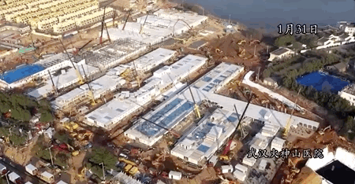火神山医院建设过程航拍 来源：人民日报
这两座为疫情而建立起的临时传染病医院，
除了考虑了医院的运维，
隔离医疗区和医护生活区做到了相对独立；
并规划了严格的医护、病患、物流、污物流线，
医患分流、洁污分流，
互不交叉，防止污染。
空调排气和污水均经过消毒达标排放。
一条专访多位参与此次传染病医院设计的
医疗建筑专家，
在“中国速度”之下，更见证“中国质量”。
*编辑 * 成卿 ****

1月24日 火神山医院施工开始 来源：人民日报
1月25日、1月26日两天，武汉火神山医院、雷神山医院，两座用来收治新型冠状病毒肺炎患者而新建的专门医院先后开工。
同时，央视新闻对两座医院的施工现场进行24小时网络实时直播。
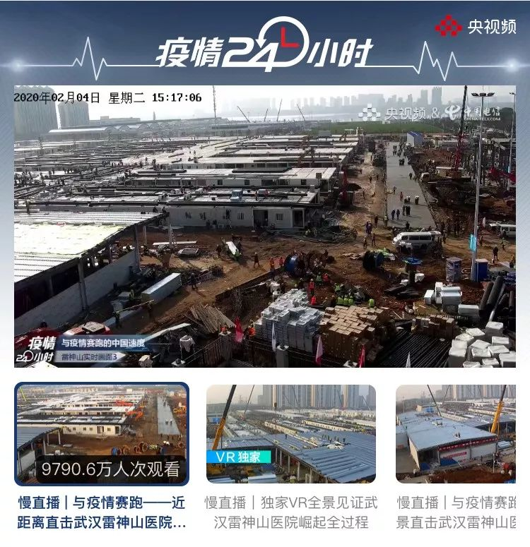2月4日下午雷神山医院施工直播间超过9000万人次观看
9000万+网友涌进直播间，给工地进行“云监工”，还给各种设施起了令人“上头”的名字：
混凝土搅拌机是“送灰宗（宋徽宗）”，高层吊车是“送高宗（宋高宗）”，压路机是“多尔衮”，样板房是“白居易”，小叉车被戏称为“叉酱”，连摄影机底下的桂花树都有个“吴三桂”的名字。

直播间出现设施“助力榜”
直播造医院一度冲上微博热搜榜。建造视频还曾一度“火”到了国外，许多外国网友惊叹于“中国速度”。
中国速度，比他们想象的更快。
 建造中的火神山医院 来源：人民日报
建造中的火神山医院 来源：人民日报
火神山和雷神山医院的取名不是两座医院所在地的名字，而是被建设者们在这次疫情之下赋予特殊意义，湖北《长江日报》的报道中解释说：
楚文化传说中的湖北是古楚之地，楚国人被认为是火神祝融的后代，人的肺部五行属金，火克金。荼毒人类肺部的新型冠状病毒惧怕高温，火神正好能驱瘟神，“火神山”之名应运而生。
至于雷神山，也是对应着中国民俗文化的传说：雷神是惩罚罪恶之神。凡有违背人伦法理且犯下不可饶恕罪责者，则将遭受五雷轰顶而毙亡。
 1月30日，北京小汤山医院启动修缮，为疫情变化做准备
1月30日，北京小汤山医院启动修缮，为疫情变化做准备
图片来源：新京报
2003年，在北京市昌平区小汤山镇，也曾有这样一家医院在7天内拔地而起，应对当时肆虐的SARS疫情。
小汤山医院的设计者是中国机械工业集团中国中元国际工程公司医疗首席总建筑师黄锡璆，今年已经79岁。
 建筑师黄锡璆 来源：人民日报
建筑师黄锡璆 来源：人民日报
1月24日农历大年三十，当天上午，黄锡璆在工作人员搀扶下进到北京的公司会议室，和同事们一起回忆小汤山医院的建设过程，查看他们拿到的武汉火神山医院布局图，为火神山医院的建设提供咨询建议。
时隔17年，这个曾经的设计团队再次集结，当年的建设图纸也在第一时间被发到此次火神山医院的设计单位。
“曾有很多地方来找我们要图纸，但没想到真的还能再用上。” 黄锡璆在接受采访时感慨。
 2月2日火神山医院竣工 来源：人民日报
2月2日火神山医院竣工 来源：人民日报
2月2日，火神山医院完成施工交付，2月3日开始收治病人。不设门诊，主要救治确诊患者，开设了重症监护病区、重症病区和普通病区，配备有感染控制、检验、特诊、放射诊断等辅助科室。
据报道，第一批转到火神山的50名患者来自汉口医院、武昌医院等三所医院，基本都是轻症患者。
这一次转院是军地之间的交接，算是试水，两方在交接过程中进行磨合、熟悉流程，防止出现之前没有预估到的问题。先转轻症患者，之后会转确诊的重症患者。
 火神山医院病房内部 来源：中国建筑微博
火神山医院病房内部 来源：中国建筑微博

手指向的为氧气瓶接口 来源：央视新闻
病区里，每个病房安置有两个床位，床头有氧气管道，病人只需要按一下床头按钮就可以吸氧。
同时配有空气净化管道，病房内的气压要比外面的低，保证外面的新鲜空气进入房间，但内部的空气不会倒流，而是通过新风系统出去。
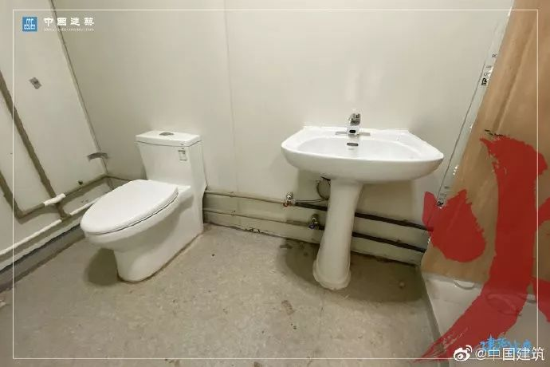火神山医院病房内部卫生间 来源：中国建筑微博
每间病房内有独立的卫生间，配备热水器和淋浴设备。
 病房内的传递舱 来源：中国建筑微博
病房内的传递舱 来源：中国建筑微博
还设有一个由两层玻璃和紫外线系统构成的传递舱，病人的餐食和药品都会从这个传递舱传递进来，通过传递舱内的紫外线系统消毒，避免感染。

火神山医院卫星图
在之前武汉医院床位紧缺的情况下，火神山、雷神山两间医院的落成一共可以提供2500多个床位，其中火神山有1000余张床位，雷神山有1560张床位。
快速建造的医院安全吗？
在美国建筑公司HOK负责医疗保健业务的建筑师Scott Rawlings说：
中国人正在建造的不是典型的医疗机构，而是 “管理感染的隔离中心”，像火神山、雷神山医院以集装箱这样的预制件或“模块化结构”建造的医院，是非常安全的。
 火神山医院平面布局 来源：中信建筑设计研究总院
火神山医院平面布局 来源：中信建筑设计研究总院
作为传染病医院，医护人员的安全十分重要。正如当年的非典小汤山医院的成功，不仅在于收治了全国七分之一的SARS患者，更重要的是实现了医护人员零感染。
而火神山、雷神山两座医院严格明确医患分区分流、洁污分区、分流。
此外，还设立了独立的医护生活区，保障一线医护人员的住宿休息和就餐问题。

无接触超市
火神山医院投入使用的第一天，一家特殊的疫区超市也正式营业：没有店员、没有收银员，买完东西扫码即走。里面准备了充足的消毒用品、卫生清洁用品、方便食品和日用杂货，为医务工作者供应便捷、安全的物资。
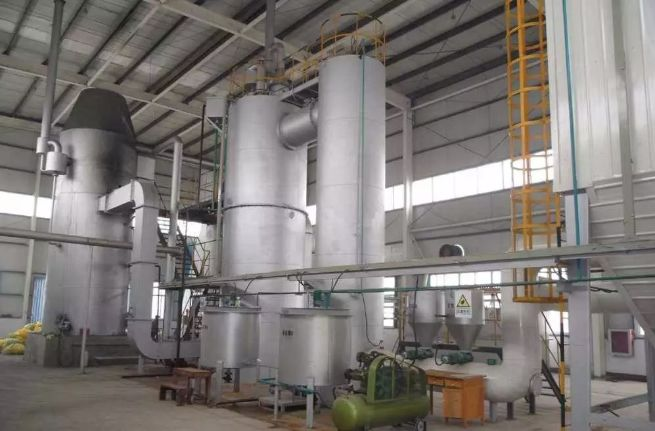医疗垃圾焚烧炉 来源：网络
而对于很多网友关心的污染问题，传染病医院有着严格的设计执行标准：
建造选择远离人口密集、水源保护地等敏感地段；
医院的废水，从排出到处理合格要经过严格的工序，要先在院区内经过全封闭的收集和预消毒处理，再提升到污水处理站进行生化处理，最终经系统检测合格后，才会排入市政管网；
医疗废弃物，有专门容器的密封装载，经专人运送至城市的垃圾处理中心，通过高温焚烧法、高压蒸汽灭菌法、化学消毒法等进行处理。


雷神山医院施工现场 来源：长江日报
武汉中南建筑设计院第一设计院院长李洁，也是这次雷神山医院项目临时党支部书记。2月1日，我们与忙碌在设计院和医院施工现场之中的他做了一次连线采访。
以下为李洁的自述。
这中间的许多公历日期会记不清楚，我就用农历日子说吧。
大年三十那天晚上9点多，我们接到了武汉城乡建设局的电话，要在2月5日建造完成雷神山医院，2月6日就要投入使用。在这之前武汉的另一个设计院开始设计火神山医院，所以接到这个任务我们也不意外，之前就估摸着一个医院可能不够（抵挡这次的疫情）。
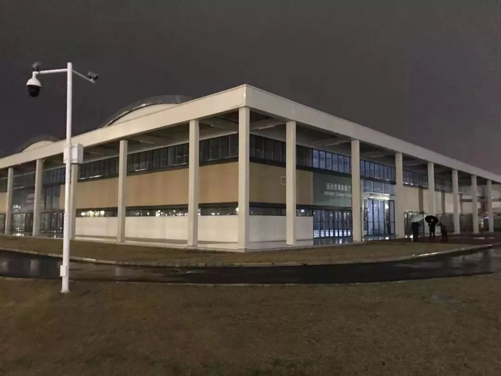军运村的运动员餐厅即将变成为医护人员服务的后勤保障楼
来源：武汉中南建筑设计院
我们设计院有个医疗健康事业部，专门做医疗建筑的设计，通常一个正规医院的设计要花上几个月的时间。接到雷神山这个项目，我们按照截止日期倒着推，两天时间里要完成所有的设计和施工图纸的交付。
这边挂了城乡建设局的电话，那边就赶紧组织起20多人的队伍，晚上10点，这个团队就站在雷神山医院的待建场地上，勘察现场了。在这之前大家还都在跟家人吃着年夜饭。
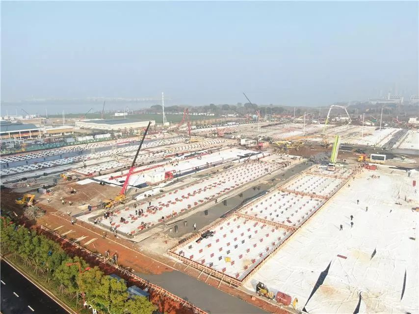雷神山医院施工现场 来源：网络
雷神山项目与火神山项目稍有不同，火神山医院是在一块荒地上开建的，雷神山医院是在武汉市江夏区黄家湖畔军运村的一块停车场上新建。
停车场旁边有一座军运会的运动员餐厅，已经落成并可以直接使用，会改造为向医护人员提供住宿和就餐的后勤保障楼。
因为是传染病临时医院，大家担心会不会对周边的居民有影响。军运村附近建好的商品房还未交付，疫情过去之后医院会停止使用，完全不会影响，请大家不要担心。
 雷神山医院施工现场 来源：武汉中南建筑设计院
雷神山医院施工现场 来源：武汉中南建筑设计院
当晚现场勘察一结束，大家直接回到办公室里加班加点画图纸。留在武汉过年的都被召集来了办公室，不在武汉的在网上远程做支持。
当时疫情已非常严重了，办公室里的所有人都带着口罩在工作。武汉从腊月二十九开始封城，公交系统停运，住得远又不会开车的同事，家属也上阵，每天负责接送。还有不少同事就备好了折叠躺椅，累得不行就在躺椅上睡一会儿，再起来干。
第一稿建筑方案，不到12小时，第二天年初一早上9点提交了。向市长汇报，和卫健委、当年非典小汤山的设计团队开会，综合意见对方案再进行修改。
施工开始后，因为工地上所用的许多材料、设备都是热心企业捐助的，参数上总会有些不符合设计图纸的地方，我们根据施工情况再不断地修改、优化。
 雷神山医院模型 来源：武汉中南建筑设计院
雷神山医院模型 来源：武汉中南建筑设计院
整个雷神山医院分为医疗隔离区和医护区。医疗隔离区有17个足球场大小，划分为病房区、医技楼、ICU病房等，设置了1560个床位，其中1500个普通床位，60个ICU床位。

小汤山医院病房功能平面 来源：中元国际
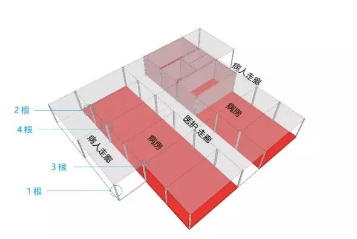
病人走廊、病房、医护走廊示意图 来源：设计联
传染病医院病房的设计讲究“三区两通道”。
“三区”是指清洁区、半污染区和污染区。医务人员有自己的清洁工作区和对应的连续通道，病房是污染区，在清洁区与病房之间是半污染区，医护人员的很多工作，比如进出病房增加或减少着装的防护等，都在半污染区里来完成。
病人通道与医护人员的通道是各自独立的，这样减少医护人员被感染的可能性。
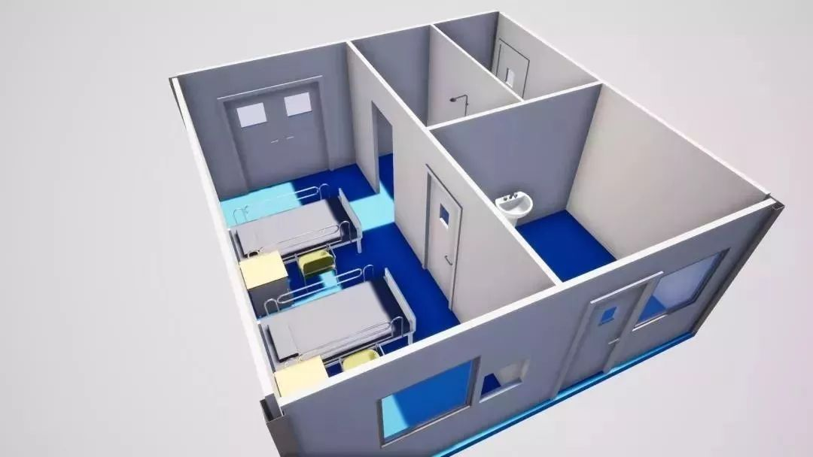
 雷神山医院病房模型 来源：武汉中南建筑设计院
雷神山医院病房模型 来源：武汉中南建筑设计院
病房都是负压隔离病房，各个病房都独立设置了分体空调，避免交叉污染。排风也是采用高效过滤器过滤后才在高空进行排放。
医院的废水，经过预消毒处理、生化处理等步骤，系统检测合格后才会排入市政管网。不会污染附近湖泊，也请大家放心。
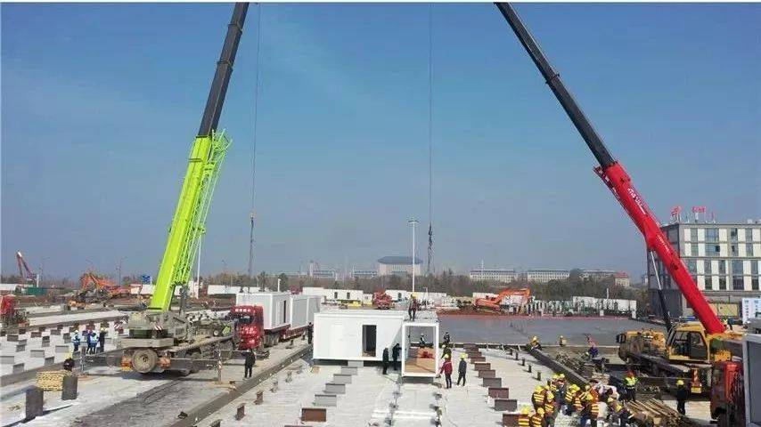雷神山医院施工中 来源：中国经济网
相比于17年前建造的小汤山医院，现在的建设标准又提高了很多，细节考虑更多。
比如救护车送患者的通道入口要做上遮雨棚，不能让患者露天，入口的台阶要做好无障碍的通道等等。
除了生理上的治疗，也要照顾到病人和高压力环境下医护人员的心理需求，沿着院区的围墙会种植乔木、灌木。
 雷神山医院施工中 来源：中国经济网
雷神山医院施工中 来源：中国经济网
其实，除了雷神山、火神山这两座倍受大家关注的医院之外，我们的设计师们还在配合湖北各处的医院进行改造。
突发这样的疫情，许多医院的传染病科室、床位数不够用，需要把其他科室改建成传染病科室。现在我们手上这样的医院改造有十多个，完成后，小型的能增加两三百张病床，大型一些的能增加上五六百张病床。
我知道网络上对火神山和雷神山医院施工的直播很受大家的关注，我自己每天也都会去看一下，说实话真的很自豪、很有成就感。


1月24日“中元国际”的医疗建筑团队与武汉火神山医院设计团队连线 来源：人民日报
有着非典小汤山医院设计建造经验的中国中元国际工程有限公司（以下简称“中元国际”），为这次火神山、雷神山医院提供了许多设计、建造意见，并针对这次新型肺炎疫情，编制了《传染病收治应急医疗设施改造及新建技术导则》，在2月3日下午公开。
以下是针对临时传染病医院建设，一条对中元国际的医疗建筑设计专家的采访。

火神山医院鸟瞰，来源：中信建筑设计研究总院
Q: 选择建造传染病医院，什么样的地最合适?
A：在选址上，新建建筑的选址宜位于地质条件良好、市政配套设施齐备、交通便利等位置，并远离人口密集、水源保护地等敏感地段，且与院外周边建筑设置大于或等于20m的绿化隔离卫生间距。
如果在已建成的综合医院中改造应急收治区，应将它设置在相对独立的区域。
此外，还要考虑配建医护人员的就近临时居住、倒班值班宿舍等设施。
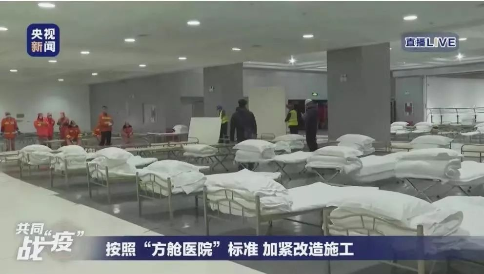
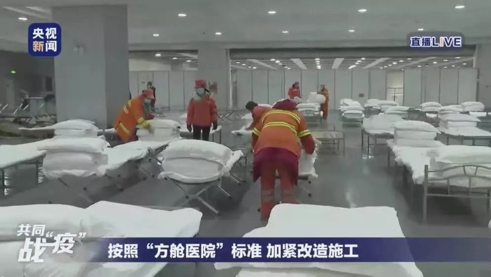2月3日晚上，武汉市开始建设三家“方舱医院”，收治新型冠状病毒感染的轻症患者 来源：央视新闻
Q：为什么临时传染病医院不能直接征用并改造酒店或体育场馆？
A：酒店大多都是一条走廊两边布置房间，传染病医院需要医护人员和病患的分流，要布置双侧走廊，改造需要大量建筑格局上的拆改。此外，酒店的暖风系统，过滤级别、独立通风设计、压力梯度等，都不能满足传染病医院的设计规范要求，尤其是呼吸道传染病。
而室内体育场馆，内部通风效果不好，不适合用于应急传染病医院。
Q：在临时应急传染病医院中，哪些设计有助于降低传染率和感染率？
A：在运送患者的环节上，采用负压救护车运送患者，并在院区出入口设置通过式急救车洗消站；转运患者的推床，宜配置防止患者口鼻飞沫飞溅的防护罩等。
在建筑流程上，建筑设施与组织气流有效结合，限制区、隔离区里要严格控制空气的流动方向，按不同压力梯度只可从半清洁区、向半污染区、再向污染区单向流动；在流线上，严格划分医务人员与患者的交通流线，清洁物流和污染物流分设专用路线，各种流线避免交叉。
在病房设计中，疑似病人宜采用单人负压病房；确诊病人可采用两人负压病房。危重症患者或其他需要单独救治的患者，应采用单人负压隔离病房。
此外，病房、缓冲间、卫生间、洗消间、走廊及其他需要灭菌消毒的场所设置紫外线消毒灯，用以消毒灭菌。
 火神山医院施工场地上，集装箱材料在拼装 来源：网络
火神山医院施工场地上，集装箱材料在拼装 来源：网络
Q: 在建造上，北京小汤山医院与武汉火神山、雷神山医院有什么区别？
A：在建筑主体材料方面，基于当时条件，小汤山医院二部病房采用整体式钢筋混凝土盒子式活动房，复合了好几种轻便建筑材料，有效拼接是当时的难题。
而这次武汉火神山、雷神山医院都采用了集装箱材料在现场进行拼装。集装箱的尺寸统一，便于快速拼装。
Q：疫情结束后，对临时传染病医院会进行怎样的处理？
A：疫情结束后，临时新建的传染病医院会根据临时建筑的使用要求以及疫情后续观察程序保留一段时间。
疫情彻底结束并经过各方专家论证后可以拆除，场地经彻底灭菌消毒后可用作其他建设；临时改造的传染病医院经彻底灭菌消毒，并经过一定时间停用观察、检测无害后，也可进行改造用作其他用途。
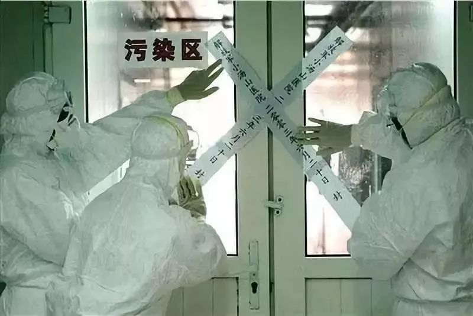
2003年6月20日封闭非典小汤山医院，来源：网络
此外，这两所医院还会使用很多高科技手段。据《财经》报道，医院将使用“医用送餐机器人，预计两家医用各会使用50台。”这些机器人可以在医院和隔离区提供免接触送餐技术，减少传染可能性。
火神山医院内有一台“远程会诊平台”系统，便于两地的医疗专家分享交流患者的CT片等医疗档案，从而进行进一步的诊断。
此外，每个送来的病人都有一个专属编号和二维码。救护车到了火神山医院后，按编号收治、入住，医生扫一扫二维码，就能追溯病人的基本信息和就诊记录。
火神山、雷神山医院外，湖北黄冈、浙江温州、河南洛阳等多地都已经修建、或正在修建临时传染病医院。2月3日晚上，武汉征用市内的会展场馆、体育场馆，改建成速成式的“方舱医院”，集中收治和隔离新型冠状病毒肺炎的轻症患者。
希望疫情可以早日过去，希望这些临时医院只是“临时”，不会再需要使用。
题图来源：微博id 兵哥哥教我踢正步

疫情依然严峻，针对以下人群，
我们正在寻找采访对象！
#我在疫情一线#
不论是您是在湖北还是全国其他地区，只要您是奋战在一线的医护人员、后勤补给人员、记者、患者或患者家属，我们希望听到您的见闻和最迫切的需求。
#我的武汉现场#
如果您正身在武汉，如果您愿意讲述在“封城”后的实地体验见闻，我们希望把它传递给更多人。
请通过以下方式联系一条编辑，我们期盼您的消息！
一条编辑部邮箱editor@yit.com
或直接在文章下留言。
请您留下所在地、职业，大致讲述您的见闻与故事，如合适我们将尽快与您取得联系，进行采访！
如有图片也欢迎一并发来。
▼

原文链接 备份链接 “来之前，说实话，心里没底，恐慌，但是真正到了武汉以后，看到热火朝天的工地，那么多人在拼命干活，心就踏实下来了。 我的想法就是既来之则安之。 火神山医院交付使用的那天晚上（2.3日），我发烧，37.8，吓了个半死，吃了 …
原文链接 备份链接 在医学专家们看来，集中收留、隔离是第一步。接下来对疑似病患的确诊、分类诊治、收治入院，将是对医疗、物资、人员分配等多重资源配置能力的综合考验，相信各方面群策群力可以渡过难关 文 |《财经》 …
原文链接 备份链接 和病毒的战争，也是一场和床位有关的战争。1月30日，黄冈卫健委主任唐志红接受督察组询问时无法回答黄冈有多少床位这个问题，一天后被撤职。那么，黄冈的床位究竟有多少？在这场争夺战中，怎么才能赢得更多的时间？ 文｜易方兴 郑 …
原文链接 备份链接 在医学专家们看来，集中收留、隔离是第一步。接下来对疑似病患的确诊、分类诊治、收治入院，将是对医疗、物资、人员分配等多重资源配置能力的综合考验，相信各方面群策群力可以渡过难关 2月3号上午8点，人们在七医院门口排队等待核 …
原文链接 备份链接 2020年2月4日上午9点26分，备受瞩目的武汉火神山医院收治了它的第一批患者，一共50位。据媒体报道，他们分别来自汉口医院、武昌医院等三所医院，转运任务由武汉市急救中心负责。从武汉城区，到远郊的蔡甸知音湖边，这50名 …